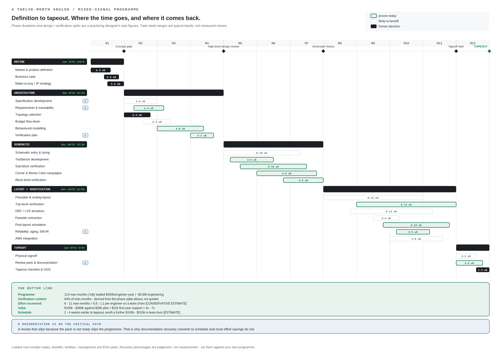

On a twelve-month analog or mixed-signal program, that is what the arithmetic supports, conservatively. The team cost that schedule gain avoids is four to seven times what the pilot and a year of support cost, and the engineering effort recovered alongside it is worth more again.
Below is the whole case, the schedule it comes from, and the fine print. In that order, because the fine print is where the numbers get less flattering and you should see it.
A twelve-month program, definition to tapeout, on the shape a practising designer would recognise.
| Phase | Duration | Team | Design / verify |
|---|---|---|---|
| Define | 1 month | 2 | 100 / 0 |
| Architecture | 3 months | 6 | 70 / 30 |
| Schematic | 3 months | 10 | 70 / 30 |
| Layout and verification | 4 months | 14 | 10 / 90 |
| Tapeout | 1 month | 8 | 5 / 95 |
114 man-months. At a fully loaded $400,000 per engineer-year, salary, benefits, facilities, management and EDA seats, that is roughly $3.8M of engineering.
Two things fall out of that table before anyone mentions AI.
Derived from the phase splits above. The widely repeated "70 % is verification" figure has no traceable origin. You do not need it, because your own schedule gives you the number.
Layout and verification is 56 of the 114 man-months and runs at 90 % verification. That is simultaneously the largest pool of effort and the one most exposed to scripted campaigns, regression management and generated reporting. It is also why the pilot should land before that phase rather than during it.

| Conservative | Upper | |
|---|---|---|
| Effort recovered | 6 man-months | 11 man-months |
| Per engineer, team of ten | 0.6 | 1.1 |
| Value at $400k loaded | $190,000 | $380,000 |
| Schedule pulled in | 2 weeks | 4 weeks |
| Team burn avoided by the schedule alone | $150,000 | $310,000 |
Against $42,000 for the small-company pilot and its first year of support, the team burn the schedule avoids is four to seven times the cost, and the effort recovered is four and a half to nine times, inside one program.
Per engineer, the conservative column is 0.6 man-months a year, about 2.6 weeks, and the upper column about 4.8 weeks. My own expectation is four to eight weeks per engineer a year. That figure is my judgement and has not been measured, so the table keeps to the conservative model.
The schedule number and the effort number are not the same thing and should not be added together carelessly. Effort recovered is real money whether or not it moves the date. Schedule only moves if the recovery lands on the critical path, which is why documentation matters more than it looks. A review that slips because the pack is not ready slips the program.
It comes from four places, listed in order of size.
One swept test, netlisted once, dispatched across a compute farm, instead of a handful of points and a manual rollup.
Requirement items authored and verified in bulk, test procedures written from the setup that produced them, decks and figures generated and QA-rendered. The largest and most portable win in the flow, and the one nobody budgets for.
Turning simulator output into the tables and plots a review needs, with every number traceable to the run that produced it.
Build scripts, testbenches, behavioural models, each paired with something deterministic that verifies it before a human is asked to look.
Every limit. Every waiver. Corner acceptance. Ship or redesign. The tapeout decision. Topology selection. Device sizing.
They are the design of the engagement: the tooling expands how much one engineer can run and check, and changes nothing about who decides. A vendor who tells you otherwise is selling you a risk you will discover at silicon.
Each point of accuracy a model lacks costs about $10,000 per engineer a year when people find its wrong answers. When a check finds them first, the same point costs minutes of waiting.
The arithmetic uses figures already on this site. Twenty answers per engineer per working day over 230 days is 4,600 answers a year, the usage the Metrics page sizes its hardware for, so one point of accuracy is 46 wrong answers a year. Suppose each wrong answer left for a person to find takes an hour to find and put right. At $400,000 loaded over 230 eight-hour days, about $217 an hour, those 46 hours cost $10,000, a little over a week of the engineer's year.
| Measured accuracy | Wrong answers a year, per engineer | Cost if people find them, per engineer | The same, team of 25 |
|---|---|---|---|
| 97%, open-weight F on our four tests | 138 | $30,000 | $750,000 |
| 93%, the ten open-weight models together | 322 | $70,000 | $1,750,000 |
| 92%, GPT-4o (2024) on our buck tasks, simulator in the loop | 368 | $80,000 | $2,000,000 |
MEASURED accuracy, from the Metrics page. ESTIMATE every other figure, from the rounded percentages and the assumed hour.
When a check catches a wrong answer, it costs one more attempt instead of an hour. Open-weight F's median wait for a correct answer is 11 seconds, so its 138 wrong answers a year cost each engineer about 25 minutes of waiting. Its on-site hardware for up to 25 engineers costs about $19,400 a year, against $750,000 a year for the same team if its wrong answers are left for people to find.
The hour is an assumption, and every dollar figure scales with it. At fifteen minutes a wrong answer, divide them by four. A wrong answer that reaches silicon costs a respin, and no figure in the table includes one.
A check catches only what it was written to catch, and not every task has one yet. That is why every generated artefact in this practice comes paired with a check, as described under Where it comes from.
A team's verdict on AI usually comes from a short trial, and the trial's setup can decide the verdict before the first answer comes back.
Each row below is a decision of that kind, with what it did to a result measured for this site.
| The decision | The conclusion it invites | What we measured |
|---|---|---|
| Test last year's model | AI solves fewer than half of these tasks | GPT-4o (2024) solved 5 of our 12 buck tasks on its own. GPT-6.1 Sol (2026) solved 12 of 12. |
| Leave the simulator out | AI is wrong more often than right | The same GPT-4o solved 11 of 12 when it could run SIMPLIS up to four times before answering. |
| Ask for the number instead of a script | These models cannot do the arithmetic | Asked for the number, ten open-weight models were cut off before answering in all 90 trials. Asked for a script the harness ran, at the same reply budget, they got 81 of 90 right. |
| Read a small perfect score as a guarantee | It is never wrong | 12 of 12 is consistent with a true rate as low as 76% at 95% confidence. |
| Grade by eye | Every plausible answer is right | At eight times the reply budget, 5 of 30 computed answers were well formed, plausible and outside tolerance, with nothing in the reply to say so. |
| Run each test once | One run is the model's score | Eight of the thirteen models we measured changed at least one answer between identical runs. |
| Skip the checks | The AI designed a regulator on its own | On the four-phase design, 252 runs graded against sealed predictions and five cold reviews turned up 41 wrong turns, one of them a load line centred on the wrong deck. |
MEASURED on the Metrics page and the four-phase design page, except the 76%, which is derived from 12 of 12 the way the Metrics page derives its intervals.
The first three make AI look worse than it is, and a team that stops there passes on a tool it could have used. The last four can make it look better than it is, and a team that stops there meets the errors later, in review or in silicon.
The first three each moved a result by 50 points or more, further than the measured gap between most of the models on the Metrics page.
Smaller companies take the pilot at $30,000, a four-week quick start for a fixed fee.
It is a broad brush that enables one or two teams. It starts with an on-site kickoff to meet the team and set priorities, then assesses, deploys and integrates, and ends with a live training session in week four. Each week ends with a post-mortem, written and shared.
Larger companies get a custom plan, by the hour at $200 to $250.
A larger company that wants to enable many teams starts with a conversation about the goal of the training, and I develop the plan from that goal.
A first client can take the work by the hour at $175.
A $5,000 deposit holds a four-week window and comes out of the $30,000 fee. It is invoiced when you book and due in 30 days, or due when you book for a window that starts sooner. Cancel at least 30 days before the window starts and the deposit is refunded. The open windows from October 2026 to April 2027 are on the Contact page.
Ongoing support, from $1,000 a month.
Release tracking, whitelist and index rebuilds, regression tests, and the recipe library as it is built. The library is in development.
The part that is usually smaller. Here it is larger.
Everything above is a model, and these are its soft spots, in the order that should worry you most.
The recovery percentages are my judgement, not a measurement. Three to seven per cent of architecture effort, five to ten per cent of schematic and backend, ten to eighteen per cent of tapeout. I set them deliberately low. They are the single largest source of error in the numbers above, and I would rather be beaten by the result than have to defend it.
There is almost no published data on how long analog design steps take. I went looking. The industry has good independent data on digital verification effort and top-down cost models, and essentially nothing on per-step analog engineering time. The layout-versus-schematic effort ratio everyone quotes traces to no survey at all. So the twelve-month program above is a practising designer's own figures, not a published mean, and your program is not that program.
Effort saved is not schedule saved. Only the part on the critical path moves the date. I have assumed roughly a third of the recovery lands there and divided by the engineers carrying it. Reasonable, arguable, and not measured.
The loaded cost of $400,000 is an assumption. Salary plus roughly equal overhead, including EDA seats. If your loaded figure is $300,000, every dollar number above drops by a quarter. Substitute your own.
The hour per wrong answer is an assumption. The accuracy section above prices each wrong answer that people have to find at one engineer-hour. Some take minutes, and one that reaches silicon costs a respin. Every dollar figure there scales with the hour you substitute.
No before-and-after baseline exists yet. The worked examples on this site were built with the practice already in place, so nothing here measures a team before and after. Week one of the pilot measures your baseline, so week four has something real to compare against. That measurement is yours to keep whether or not you continue.
I have not run all of this myself. The worked examples on this site are what has been demonstrated. The rest of the flow ought to work and has not been run, so treat it as extrapolation.
And the one that cuts the other way. Every number above is conservative by construction. If the model is wrong, the more likely direction is that it understates.